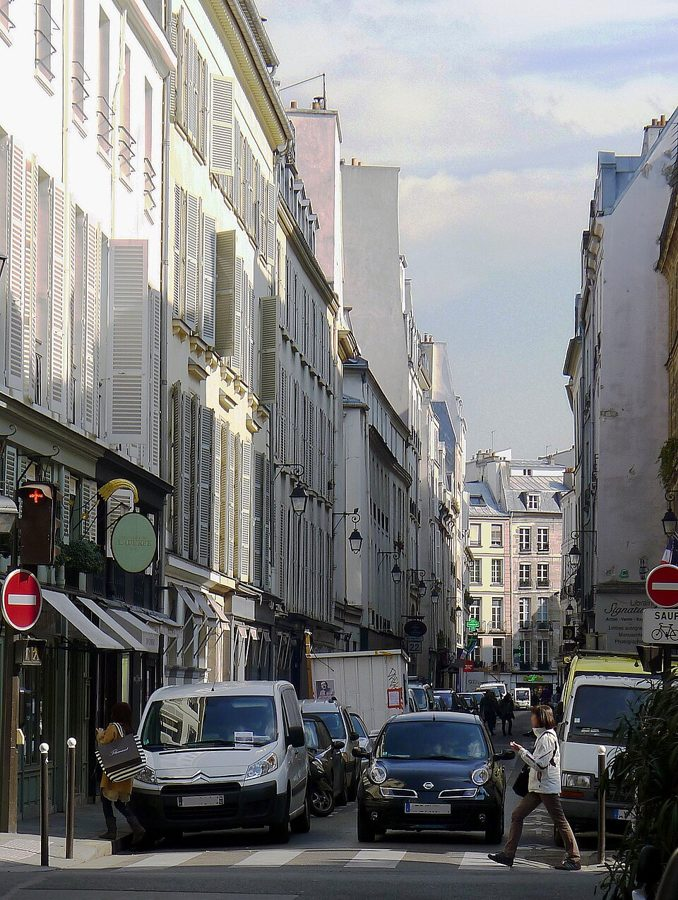
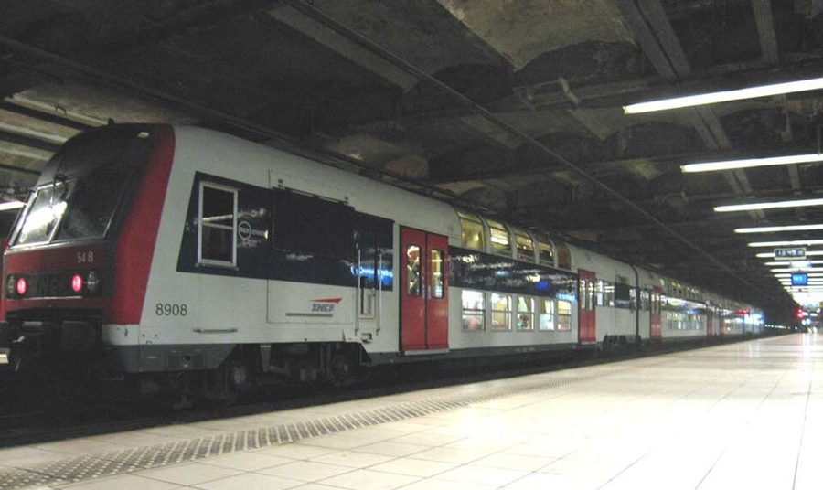
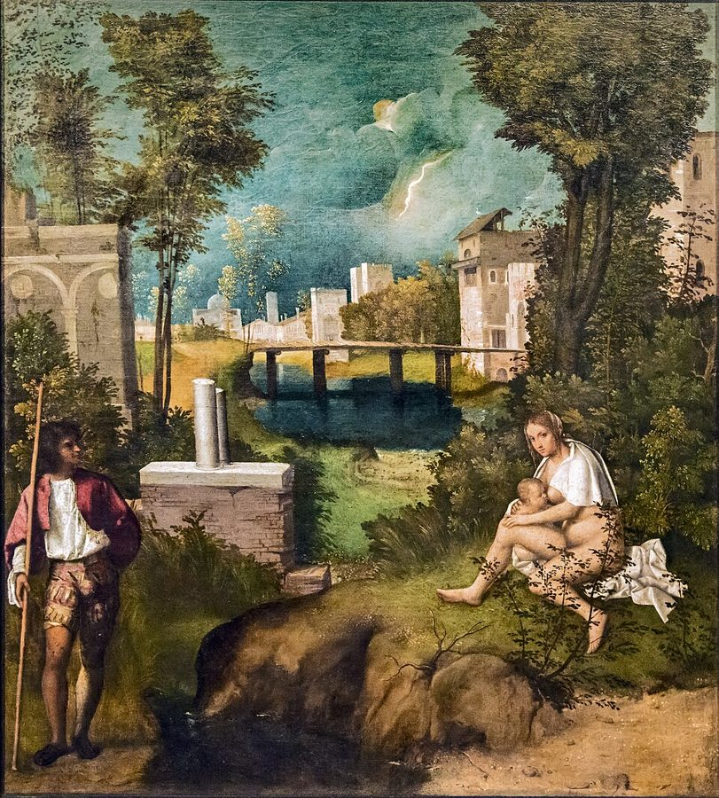
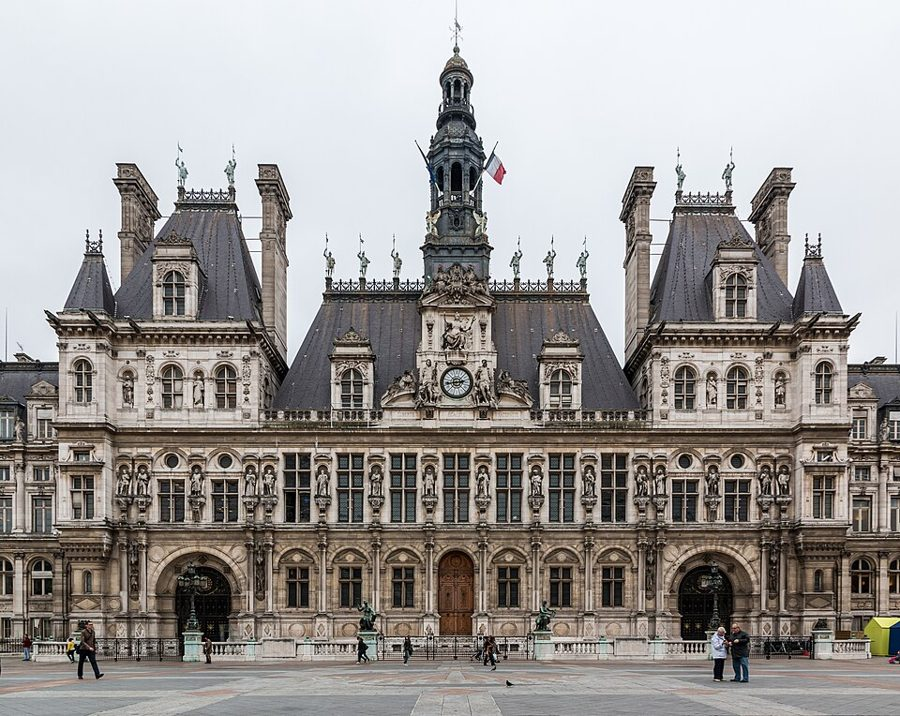

这一篇在做什么
1995 年秋天，作者一家刚在巴黎左岸住下。这一篇从他家附近地铁里的一颗炸弹讲起，转到总理朱佩（Alain Juppé）的公寓丑闻：朱佩和几个家人都住着巴黎市政府名下的公寓，他自己那套租金低于市价。作者一边讲丑闻怎么一步步闹大，一边讲自己一家找房子的遭遇。读的时候抓两条线：朱佩的房子和作者的房子；再留意 domaine privé（市府私产）这个词，它在全篇里越用越宽。

雅各布街（rue Jacob），巴黎第六区，2012 年。朱佩和他的子女住的市府公寓都在这条街上（照片里是哪一栋，本站不知道）。Mbzt，CC BY 3.0，维基共享资源 读之前：这篇的来历
这一篇写在 1995 年秋天。开头那颗炸弹是 10 月 17 日早上的 RER C 线爆炸；文中说检察官刚对朱佩的案子表态，那是 10 月 11 日的事；第 5 节说公务员「几周前」让巴黎停摆，多半指 10 月 10 日的全国公务员罢工，不是第 3 篇那场 11 月底才开始的大罢工。所以这一篇写在第 3 篇之前。它是第一部分「冬季马戏团」的第一篇随笔，前面的第 1 篇是全书导言，后面的第 3 篇写罢工。一家人这时刚到巴黎：夏天来找房，秋天才搬进来，儿子 Luke 一岁上下。
一位总理住了便宜的市府公寓，为什么在法国闹了四个月？英美记者说这是「精英特权」的丑闻，作者同意吗？
读的时候带着这几个问题。不用先找答案，读完回来对照「检查一下理解」。
作者把自己找房子和朱佩的丑闻放在一起讲。两件事哪里相像，哪里不同？§2 §3 §4
朱佩和希拉克（Jacques Chirac）为这件事辩护的几句话，作者为什么觉得「走调」？§2 §4
最后一节从朱佩一下子说到全法国。作者自己的解读是什么？它和开头的炸弹有什么关系？§5
这一篇的路线
原书这一篇没有分隔，像一口气说完。它有三条线：作者家门口的炸弹、总理朱佩的公寓丑闻、作者一家找房子。朱佩那条最长，找房那条两次插进来，炸弹只在一头一尾出现。真正的走法藏在 domaine privé 这个词里：它先是巴黎市政府手里的一批房子，接着被作者借来说「所有值得住的巴黎公寓」，到最后一节又撑大成每个法国人身边的一圈福利。读译本时最容易在最后一节觉得跳了：从朱佩搬家一下子说到全法国的特权和放炸弹的人，那是这个词撑到了头。
炸弹
朱佩
我家
§1
§2*
§3*
§4*
§5*
床下的炸弹
威尼斯的诱惑
雅各布街
带条件的公寓
一家人都有份
租约泡汤
逐客令
圈外的人
domaine privé 越说越宽：
市府的一批房 → 值得住的巴黎公寓 → 每个法国人的福利圈 → 圈外
本站示意图。紫点是炸弹，蓝点是朱佩的公寓，橙点是作者一家找房，折线是阅读顺序；虚线是本站分节的位置（原书没有分隔）。 作者落在哪： 英美记者说朱佩栽在精英特权上，作者认为几乎正相反：在法国，人人都坐在自己的一块「私产」里，丑闻只是提醒了大家这一点；进不了圈子的人被永远关在外面，作者把开头的炸弹接到了他们身上。至于人们开出的药方「透明」，作者不以为然：一眼看得穿的巴黎不值得要。
分节地图
原书这一篇没有分隔，一口气写完。本站按内容分成五节：§1 是开头，带 * 的四节是本站分的，原书里找不到分隔，靠粗体的场面和下面斜体的英文开头认位置（打开电子书搜英文就能跳到那里）。读完一节打个勾。
地铁里的炸弹，楼里的「保持冷静」约 300 词 A bomb went off under my bed … 开场的小事。作者为什么不搬家；这颗炸弹最后一句还会回来。 总理朱佩：秃头、威尼斯、雅各布街的公寓约 1100 词 For the new French prime minister, … 朱佩其人和丑闻的起头。留意 domaine privé 第一次出现时的本义。 找房：三种公寓，每套都带着条件约 300 词 As it happened, Martha and I … 作者把 domaine privé 借来说自己找房。纽约和巴黎的公寓在这里对比。 子女、前妻都住市府房，总理上电视约 700 词 Juppé would probably have been able … 丑闻闹大，作者家的租约也出了岔子。两条线在这里交替最密。 检察官的逐客令，人人都说「透明」约 600 词 Bruno Cotte has at last offered … 从朱佩拉远到全法国，全篇的判断在这一节。
背景：作者默认你知道的事
按在书里出现的顺序排，标题前是节号。
§1 1995 年秋天的炸弹1995 年夏秋，阿尔及利亚的武装伊斯兰组织（GIA）在法国连续制造爆炸（第 3 篇的背景也提到）。10 月 17 日是星期二，早上七点左右，一枚塞满螺栓的煤气罐在 RER C 线的列车上爆炸，地点在奥赛博物馆站和圣米歇尔站之间的隧道里，约三十人受伤。作者说「炸弹在我床下爆炸」是夸张，他自己马上补了一句：误差几百码。他到下午才从《世界报》（Le Monde）上得知，因为这份报纸是晚报，在巴黎下午出版。

RER C 线的列车停在奥赛博物馆站，2006 年。1995 年 10 月那颗炸弹就是在这一站附近的隧道里炸的。Pline photo personnelle，CC BY-SA 3.0，维基共享资源
Paul Auster Paul Auster 美国小说家，《纽约三部曲》的作者，在法国读者很多。§1 街对面睡衣店的年轻店主在读他的小说，却不敢相信作者会离开纽约来巴黎：她手里读的就是一位纽约作家。
§2 朱佩：国家行政学院和希拉克的巴黎市政府朱佩 1945 年生，出身西南部的朗德（Landes），1995 年正好五十岁。他毕业于国家行政学院（ENA），这所 1945 年创办的小学校培养了法国大部分高级官员和政治人物，毕业生叫 énarque。1977 到 1995 年希拉克任巴黎市长，朱佩 1983 年起是他主管财政的副市长。1993 年右派赢得议会选举，希拉克自己不当总理，让巴拉迪尔（Édouard Balladur）出任，朱佩做外交部长。1995 年 5 月希拉克当选总统，任命朱佩为总理。
希拉克 Jacques Chirac 1977–1995 年任巴黎市长，1995 年 5 月当选总统。§2 结尾他在电视记者会上替朱佩辩护，作者说那番话和朱佩的一样走调。
Barry Diller 和 Larry Tisch Barry Diller, Larry Tisch 两位美国传媒大亨，都是光头。作者拿他们形容朱佩的秃顶：在美国，好像只有大老板才撑得起这种发型。
§2 《威尼斯的诱惑》、乔尔乔内和蒙田朱佩 1993 年出了一本随想录 La Tentation de Venise（《威尼斯的诱惑》），说自己想退隐威尼斯。作者列的几样都是威尼斯的招牌：学院美术馆里乔尔乔内（Giorgione）的《暴风雨》（书里拼作 Tempestá），和一种桃汁兑起泡酒的鸡尾酒贝利尼（Bellini）。蒙田（Montaigne）是法国退隐沉思的典范，1571 年退居自家庄园的塔楼，写下《随笔集》，可他 1581–1585 年当过两任波尔多市长；朱佩 1995 年 6 月也当选了波尔多市长。作者括号里那句「以防万一」，挖苦的是法国政治人物常常身兼数职。

乔尔乔内的《暴风雨》，藏于威尼斯学院美术馆。朱佩书里的退隐梦，有一项就是去看这幅画。Didier Descouens，公有领域，维基共享资源 蒙田像，画上写着「蒙田领主」。朱佩的书用了蒙田的话作题词。anonymous，公有领域，维基共享资源
密特朗 François Mitterrand 社会党人，1981–1995 年任总统，1996 年 1 月去世。§2 说他卸任后专门接受采访，宣布自己在巴黎散步、看天。
巴拉迪尔 Édouard Balladur 1993–1995 年任总理，1995 年参选总统，第一轮就被淘汰。作者开玩笑说他忙着显得超脱，忘了竞选。
Christine Ockrent Christine Ockrent 法国知名的电视新闻人。她当时主持新闻周刊《快报》（L’Express），密特朗的「看天」采访就是给她的。
§2 《鸭鸣报》和巴黎市的「私产」《鸭鸣报》（Le Canard Enchaîné）是 1915 年创办的讽刺周报，每周三出版，以爆政界丑闻出名；1995 年 6 月朱佩的公寓就是它捅出来的。法国的公共财产分两类：公共领域（domaine public）不能买卖，私人领域（domaine privé）可以像私产一样出租、出售。巴黎市政府名下的这批公寓属于后者，和书里说的公共住房（多在城边的第十九、二十区）不是一回事。1977 年以前一百多年，巴黎由中央任命的省长管理，1977 年才选出第一位市长，就是希拉克。

巴黎市政厅（Hôtel de Ville），2014 年。市府名下的公寓由在这里主事的人分配。Dietmar Rabich，CC BY-SA 4.0，维基共享资源 §2 左岸：雅各布街和「教士草地街」雅各布街在第六区圣日耳曼德佩，离塞纳河只隔一两条街，是左岸最贵的老街区之一。作者一家最后住进第七区的 rue du Pré-aux-Clercs，也在左岸，离雅各布街很近。街名的意思是「教士草地」：中世纪这里是一片草地，巴黎大学的学生（当时叫 clercs）常来游玩。§1 那颗炸弹炸在地下的 RER 隧道里，离这一带不远。
§3 日本的财团，密特朗的大工程keiretsu（系列）是日本的企业集团，几十家公司互相持股、彼此照应，外人很难插进去。作者借这个词说巴黎的政界、文坛、时尚圈。grands projets（大工程）是密特朗任内在巴黎建的一批纪念性建筑的统称，有卢浮宫的玻璃金字塔、巴士底歌剧院、拉德芳斯大拱门、新的国家图书馆。作者用它形容要大动干戈才能住的公寓，是拿总统的工程开玩笑。
§4 检察官 Cotte 和「意大利那条路」Bruno Cotte 1990–1995 年任巴黎检察官。据当年《世界报》的报道，他 1995 年 10 月 11 日认定朱佩有公职人员非法谋利（ingérence）的情节，但以总理年底前搬出为条件不予起诉，就是 §5 开头那张「逐客令」。「意大利那条路」指 1992 年起米兰检察官发起的「净手运动」（Mani pulite），大批意大利政界人物被起诉，旧政党体系随之瓦解。作者说法国的老规矩是让事情过去。
§5 福利、郊区和「被排斥的人」acquis sociaux 是法国人说的「社会既得权益」：退休、医保、工作保障、带薪假这一类，被看作已经争到手、不能退的东西。banlieue（郊区）在法语里常特指城外的大型住宅区，住着很多北非移民的后代，失业率高。「排斥」（exclusion）是九十年代法国的热门词，希拉克 1995 年竞选就打「社会断裂」（fracture sociale）的牌。作者说警察基本放弃了郊区，这是他的判断。
词与短语
只收中文译文多半传不出原味的地方：熟词生义、反话和挖苦、典故、夹在英文里的法文。读译本读到觉得别扭、不知道作者在说什么时，来这里找那一节的；斜体小字是原句里的几个英文词，在电子书里搜它就能找到原文。
§1 地铁里的炸弹，楼里的「保持冷静」
a bomb went off under my bed
A bomb went off under my bed …
炸弹就在我床底下炸了
夸张的开头。读下去才知道炸弹在地下的火车里，作者自己补了一句「误差几百码」。整篇最后一句又说回「你的床下」，首尾扣上。
politely insistent
… forlorn, politely insistent two-note bleating …
客客气气又不依不饶
形容巴黎救护车那种两个音交替的警笛。bleating 是羊叫。作者把警笛写得像个有礼貌的法国人。
Gardez votre sang-froid
“Gardez votre sang-froid” is the single …
（法文）保持冷静
sang-froid 字面是「冷血」，在法文里是褒义：临危不乱。楼里的紧急须知只贴了这一句，作者说它「自给自足」：除此之外什么指示都没有。
invulnerable by right
… that they are invulnerable by right
理所当然地刀枪不入
和前面 superior by birth（生来高人一等）对仗。by right 是「按理应得」。作者说巴黎人自认高贵，却不像美国人那样觉得自己天生不该受伤害，所以不慌。
§2 总理朱佩：秃头、威尼斯、雅各布街的公寓
if unadmitted
… as a vast, if unadmitted, relief …
虽然嘴上不承认
这里的 if 是「虽然」，不是「如果」。炸弹让总理松了一大口气：终于有别的事可讲了。很冷的一句挖苦。
l’affaire des logements
… other than l’affaire des logements, which …
（法文）住房案
法国报纸给这场丑闻起的名字。l’affaire 在法文里常指轰动的政治案件，像德雷福斯案（l’affaire Dreyfus）。
from opposite ends
… approached the matter from opposite ends
从两头着手
作者和总理都为左岸公寓发愁，一个想找一套，一个要解释自己为什么有那么多套。这句把两条线第一次拴在一起。
aerodynamic baldness
… enviable, aerodynamic baldness that in America …
流线型的秃顶
aerodynamic 是空气动力学的，说秃得光滑利落，像跑车。enviable（令人羡慕的）是半真半假的恭维。
énarque
… an older fellow énarque, Jacques Chirac …
（法文）国家行政学院毕业生
由 ENA 加后缀造的词，有时带点讥讽，指那批同一所学校出身、把持政府的精英（见「背景」）。fellow 是「同为」：希拉克是他的老学长。
Bosnia aside
… in which position, Bosnia aside, he …
除了波斯尼亚
轻描淡写。1992–1995 年的波斯尼亚战争是那几年欧洲最大的外交难题。「除了它都干得不错」，言下之意是最难的那件没办好。
a fighting campaign manifesto
… regarded as a fighting campaign manifesto …
一份斗志昂扬的竞选宣言
要反着读：一本说「我想退隐」的书，被当成参选的表态。作者接着解释：在法国，越显得不爱政治，越像要上台。
ahead of the pack
Juppé, ahead of the pack, had written …
领先一步
pack 是一群猎犬或赛跑的人。别人只说想做别的事，朱佩还要去另一个国家做，在「超脱比赛」里跑在了前头。
just in case
… one office at once, just in case.
以防万一
挖苦法国政治人物身兼数职（总理兼波尔多市长）。「以防万一」说得像是在给自己留后路，口气很淡，刺很深。
ostentatious displays of detachment
… ostentatious displays of detachment are something of …
大张旗鼓地表演超脱
ostentatious（招摇的）和 detachment（超然）本来互相矛盾：超脱要摆给人看，就不超脱了。作者说这在法国政界是一项竞技运动。
keeping his hand in
… his way of keeping his hand in
保持手感、不让自己生疏
keep one’s hand in 是「为了不生疏而时常练练」。密特朗宣布自己只散步看天，大家却明白这是他不肯退场的方式。
sneaked an item
… sneaked an item into L’Express announcing …
悄悄塞了一条消息
item 是报上的一则短讯。宣布自己「也在看天」，还得偷偷登报，超脱成了一门手艺。
domaine privé
… belonged to the domaine privé of …
（法文）市府私产
字面是「私人领域」，法律上指公家机构名下可以出租买卖的财产（见「背景」）。全篇的关键词，后面作者会一次次扩大它的意思，篇名就从这里来。
city fathers
… which the city fathers eventually started renting …
市府的头面人物
不是「城市之父」，是对市政官员的老派称呼。后面 renting to one another（互相出租）才是重点：管房的人把房子租给了自己人。
rented to himself
… he had in effect rented to himself …
等于租给了自己
朱佩当时是管市府财政的副市长，签字的和住进去的是同一个人。in effect（实际上）一带而过，挖苦全在这里。
serene
… that he felt “serene” and that …
（我）很坦然
朱佩的原话，作者打了引号。§5 又说他的 serenity 一去不返，前后呼应。
off-key
There was something equally off-key about …
走调、不合时宜
本义是唱歌跑调。说朱佩和希拉克的辩护听着就不对劲：一个说看信箱就知道我住哪儿，一个说别人为国家出力还没他多。
§3 找房：三种公寓，每套都带着条件
keiretsus
… fashionable keiretsus that dominate Paris
（日文）企业集团、小圈子
日本互相持股的企业集团（见「背景」）。作者不用 circle 而借日文，强调这些圈子封闭、互相照应，外人进不去。
in tow
Martha and I, eight-month-old in tow …
带着、拖着
in tow 本义是被拖船拖着走。拖着一个八个月大的婴儿看房，狼狈都在这两个词里。
grands projets
… would require grands projets to make them …
（法文）大工程
影射密特朗在巴黎建的那批「大工程」（见「背景」）。一套公寓要动用总统级的工程才能住，是夸张的玩笑。
a catch
… or, to put it another way, a catch
附带的麻烦条件
catch 在这里是「暗藏的问题、陷阱」，不是「抓」。作者先说好公寓都有「一段漫长的私人历史」，再改口叫它 a catch，一雅一俗。
an already parsed sentence
In Paris it is an already parsed sentence …
一个早已分析好了的句子
parse 是语法课上的「分析句子成分」。后面的 imperfect（未完成过去时）、conditional（条件式）、past tense 都是语法术语，也都有双关：不完美、附带条件、过去的事。对照前一句纽约公寓是 blank slate（白纸一张）。
§4 子女、前妻都住市府房，总理上电视
courtesy of
… had apartments courtesy of the City of Paris
承蒙巴黎市政府提供
courtesy of 常见于节目鸣谢、照片出处，「由某某惠赠」。用在这里，客气得刺耳。
ethical backsliding
… all-purpose law against ethical backsliding on …
操守上的失足
backslide 原指信徒重新堕落，说得很轻。all-purpose（万能的）也在暗讽这条法律什么都管、又什么都管不严。
sweetly enough
… worst penalty, sweetly enough, was that …
说来真可爱
反话。这条法律最重的处罚只是今后不许再参选，作者用 sweetly 表示它温和得可笑。
handlers
… beloved of American handlers
（政客的）公关幕僚
handler 本义是驯兽员、操控者，美国口语里指替政客设计形象的顾问。「我没什么可隐瞒的」这种手忙脚乱的电视表演，正是美国幕僚的拿手戏。
fighting dirty
This argument was regarded as fighting dirty.
出阴招
朱佩说记者们都来他家吃过饭，当时谁也没说什么。这是把记者拖下水，所以算「打法不干净」。《世界报》的回应更妙：做客的人本来就不该问主人房租多少。
go the Italian route
… whether to go the Italian route and …
走意大利那条路
指意大利检察官大规模起诉政界人物的「净手运动」（见「背景」）。和后面 the honored French route（可敬的法国老路：让它过去）相对，「可敬」是反话。
not incidentally
… (and, not incidentally, launch his own political …
而且这绝非顺带
起诉总理也能顺便成就检察官自己的政治前途。作者用括号加 not incidentally，暗示这才是真正的诱惑。
make insiderness look cute
… part-time insider to make insiderness look cute
让「圈内」显得挺可爱
自嘲：作者以为自己拿到了租约，算是半个圈内人了，再看总理的丑闻就觉得好玩。cute 用得很轻佻，紧接着他的公寓就没了。
off the market
“Your apartment is off the market.”
房子撤盘了
off the market 是不再出租出售。作者接着说中介的口气「好像公寓得了奖」：撤出市场被说得像一种荣誉，巴黎的房子本来就不全归市场管。
leap every time the doorbell rings
… makes us leap every time the doorbell rings
门铃一响就心惊肉跳
房东说从日本回来就要收房，日期未定。这套公寓也有自己的 catch，和 §3 那几套一样。
§5 检察官的逐客令，人人都说「透明」
the savor of persecution
… at least had the savor of persecution
好歹有点受迫害的味道
一位老记者的话。起诉还能让人当烈士，被法官勒令搬家只剩可笑。savor 是滋味，好像受迫害也是一种可以品尝的东西。
acquis sociaux
… the system of acquis sociaux—entitlements—runs so …
（法文）社会既得权益
acquis 是「已经得到的」。作者给的英文 entitlements 偏中性，法文里有「争来的、不能退」的意思（见「背景」）。
entrée
… they are without any entrée at all
门路、进入的资格
不是「主菜」，是法文本义「入口、进门的权利」。没有任何门路进入那些「私产」，连排队的资格都没有。
banlieue
… who fill the Paris banlieue that …
（法文）郊区
字面是城郊，但在当时的法国常特指移民聚居的大型住宅区，和美国说的富裕 suburb 意思差得远（见「背景」）。
the excluded
They are called, simply, the excluded.
被排斥的人
直译法文 les exclus，当时的热门词。紧接着一句「有些人在你的床底下放炸弹」，回到全篇第一句，炸弹和私产在这里接上。
rattle off … by heart
… able to rattle off the square meters by heart
张口就背出来
rattle off 是一口气熟练地报出来。朱佩说外交部官邸有二百八十平方米，大家觉得他有理，也注意到这个数字他记得太熟了。
transparence
… public life is transparence, which has …
（法文）透明
作者用法文拼法，标出这是法国人当时挂在嘴边的口号，不是英文里平常的 transparency。
ant farm
… the way an ant farm is transparent
（玩具）蚂蚁农场
美国孩子常见的玩具：两片玻璃夹着沙土，能看见蚂蚁挖洞。看得见、碰不着，作者用它说人们想要的「透明」不过如此。
grace and favor
… given Paris its peculiar grace and favor …
优雅与魅力
字面是「风度和恩宠」。英国有 grace-and-favour residence 的说法，指王室恩赐、免租入住的房子。放在一篇讲靠关系拿房的文章末尾，这里多半也在玩这个双关。
后来
这一篇停在 1995 年秋天检察官表态之后。下面接着讲书里的人和机构后来怎样。每条都写了核对日期，这类内容过一两年就会变。
朱佩：判刑、回波尔多、进宪法委员会
朱佩 1997 年议会选举失利后下台。2004 年 12 月 1 日，凡尔赛上诉法院在巴黎市政府给共和联盟（RPR）党工发工资的「虚设职位」案中，以非法获取利益罪判他 14 个月缓刑、一年不得担任公职，他因此辞去波尔多市长。2006 年他重新当选波尔多市长，2011–2012 年再任外交部长，2016 年右派总统初选落败。2019 年 3 月进入宪法委员会。核对于 2026-10。依据：凡尔赛上诉法院 2004 年 12 月 1 日判决（Légifrance），Maire-info，法国宪法委员会网站。
国家行政学院关门了
书里说培养了几乎整个法国政治精英的 ENA，2021 年 6 月 2 日由一道法令撤销，2022 年 1 月 1 日起由新设的国家公共服务学院（INSP）取代，校址仍在斯特拉斯堡。核对于 2026-10。依据：2021 年 6 月 2 日第 2021-702 号法令（ordonnance），国家公共服务学院（INSP）官网。
值得停下来的句子
They are the privileged class, protesting on behalf of their accumulated perks.— §5，讲英美记者看反了的那一段。本站译：他们自己就是特权阶层，在为自己攒下的好处抗议。
这句要和前一句一起看：前一句说他们不是在反对 the accumulated perks of a privileged class，这一句把同样几个词翻过来用，privileged class 从宾语变成主语，against 换成 on behalf of。英文靠这种镜像造出讽刺，中文译出意思不难，那种「原样的词，倒过来」的味道很难保住。
A Paris you can see right through hardly seems worth having.— §5，全篇最后一句。本站译：一个一眼就能看穿的巴黎，似乎不太值得拥有。
see right through 有两层：字面是透明，能一直看到底；习语是「看穿」一个人的伪装。作者说巴黎的魅力在于把别处藏的事摆出来、把别处摆出来的事藏起来，透明就是把这点魅力也拿走。hardly seems 是轻描淡写，比直说「不值得」更有分寸，也更像作者的口气。
检查一下理解
先在心里答，再点开。答错的那题，回书里把对应那一节再读一遍。
1.（§1）炸弹就在附近爆炸，作者为什么说他不会搬家？ 他说恐怖主义是生活的一部分，巴黎的一套好公寓却是奇迹。这既是玩笑，也是全篇的引子：在巴黎，找到好房子比躲开炸弹还难。
2.（§2）一本说自己想退隐威尼斯的书，为什么被当成竞选宣言？ 作者说在法国，有野心的政治人物要写书证明自己不爱政治，正像美国政客要写书证明自己满脑子只有政治。表演超脱是法国政界的竞技，朱佩连换个国家都写进去了，算是领先一步。
3.（§2）domaine privé 本来指什么？为什么连巴黎人都说不清？ 指巴黎市政府名下的一批半秘密的公寓，由主管巴黎的人酌情分给谁住，不少在左岸靠河的老街。它们来路各异，1977 年改革后反而更说不清，书里列了三种估计，从一千三百套到四千多套。
4.（§3）作者说巴黎所有值得住的公寓都属于 domaine privé，是什么意思？ 不是说都归市政府，而是都要靠某个圈子（政界、文坛、时尚圈）才拿得到，而且每套都带着前任住户的故事和条件。作者的意思是巴黎的房子不完全由市场支配。
5.（§3）作者拿语法打比方，纽约和巴黎的公寓各像什么？ 纽约的公寓是一张白纸，租下来就能重新开始；巴黎的公寓是一个早已分析好的句子，满是未完成时、藏着的条件句和过去时的长从句，也就是前人留下的历史和附带条件。
6.（§4）作者说起诉总理是「意大利那条路」，不起诉是什么路？他怎么看检察官的处境？ 不起诉是「可敬的法国老路」：让事情过去。作者还在括号里点出，起诉总理也能顺便开启检察官自己的政治前途，两条路各有诱惑。
7.（§5）作者为什么说英美记者的解读「几乎正好相反」？ 英美记者以为朱佩栽在属于特权精英上。作者认为最生气的人，比如罢工的公务员，自己就是特权阶层；丑闻提醒了他们，法国的福利体系深到取消它几乎等于取消法国生活。被关在这套体系外面的，是郊区的移民。
用一句话说这一篇，写给一个没读过的人。
精彩回顾
读过又忘了，从这里想起来。挑的是这一篇最值得记住的场面和说法，不按原书顺序；每条后面是节号，想细看就回书里那一节。全书各篇的这一节都收在全书回顾 。
一句话： 总理住市府便宜房的丑闻，被作者读成整个法国的写照：人人守着自己的一块「私产」，进不去的人被关在外面。
床下的炸弹 地铁里的炸弹在作者家附近爆炸，他说就算这里是爆炸中心也不搬：恐怖主义是生活的一部分，巴黎的好公寓是奇迹。
§1 看信箱就知道 朱佩当副市长时等于把市府公寓租给了自己。被质问时他说自己很坦然：谁看一眼信箱都知道他住这儿。
§2 分析好的句子 纽约的公寓是一张白纸，巴黎的公寓是一个早已分析好的句子，满是未完成时和藏着的条件句：每套都带着前人的故事。
§3 撤盘像得了奖 作者以为租约到手，正看总理的笑话，中介来电说房子撤盘了，口气好像公寓得了奖。
§4 给总理的逐客令 检察官决定不起诉朱佩，条件是他搬出去另租。作者说这大概是西方大国总理头一回收到法官的逐客令。
§5 蚂蚁农场式的透明 人们开出的药方是「透明」，像玻璃蚂蚁箱，看得见碰不着。作者说一眼看穿的巴黎不值得要。
§5